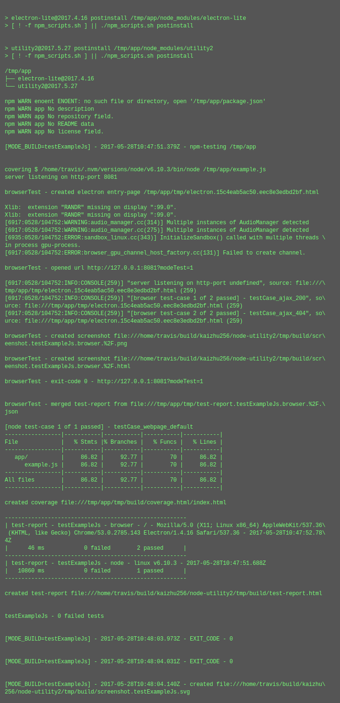

test-report for my-app (v0.0.1)
summary
version-
0.0.1
test date- 2017-05-28T10:47:51.735Z
commit info-
4d95d8e7868cb2c28fe817293ce366fa6f34782c - - npm publish 2017.5.27 - ignore missing links in README section 'all screenshots' - merge shell function shReadmeBuildLinkVerify into shBuildCiInternal - rename screenCapture -> screenshot - uprade to istanbul v0.4.5 - upgrade to sjcl v1.0.6 - auto-create README section 'table of contents'
| total time-elapsed | total tests failed | total tests passed | total tests pending |
|---|---|---|---|
| 12173 ms | 0 | 3 | 0 |
1. testExampleJs - browser - / - Mozilla/5.0 (X11; Linux x86_64) AppleWebKit/537.36 (KHTML, like Gecko) Chrome/53.0.2785.143 Electron/1.4.16 Safari/537.36 - 2017-05-28T10:47:52.784Z

time-elapsed- 11106 ms
tests failed- 0
tests passed- 2
tests pending- 0
| # | time-elapsed | status | test-case |
|---|---|---|---|
| 1 | 22 ms | passed | testCase_ajax_200 |
| 2 | 31 ms | passed | testCase_ajax_404 |
2. testExampleJs - node - linux v6.10.3 - 2017-05-28T10:47:51.688Z

time-elapsed- 12173 ms
tests failed- 0
tests passed- 1
tests pending- 0
{kind=link}
| # | time-elapsed | status | test-case |
|---|---|---|---|
| 3 | 10852 ms | passed | testCase_webpage_default |